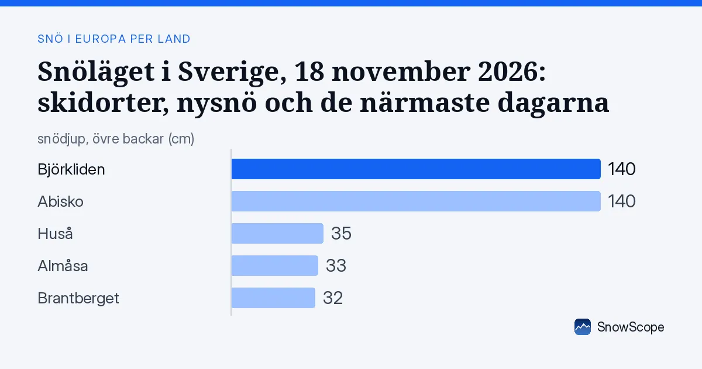
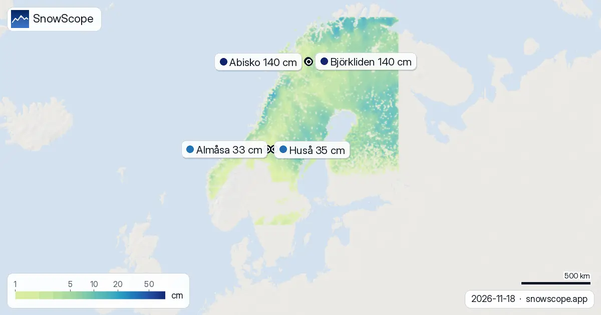
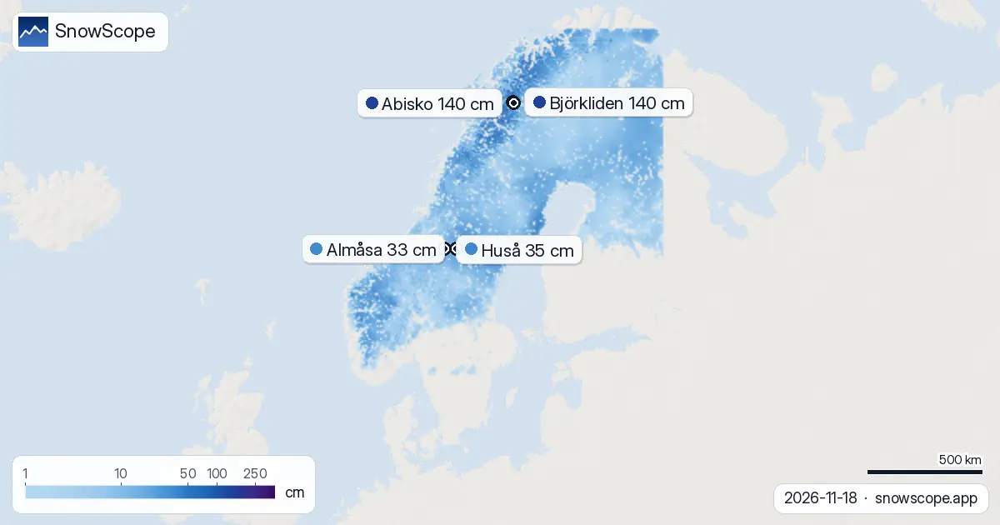

Snöläget i Sverige, 18 november 2026: skidorter, nysnö och de närmaste dagarna
Sverige ligger före denna vecka. Snö täcker 83 procent av de kartlagda fjällen, mot Finlands 55 procent. De två länderna visar hur mycket riktning spelar för tidig vinter: en storm kan förändra balansen mellan grannar.
Se snöprognosen för Björkliden live i SnowScope-appenSnödjup, pudervarningar och 3D-kartan, gratis.
Nationell överblick
Sveriges snökarta växte snabbt under de senaste 24 timmarna. Den 18 november var 269 420 km² höglandet vitt—12 280 km² mer än dagen innan. Den tillväxten bar snö från 500 km² lägre sluttningar upp till höglandet där den stannar.
Finlands karta berättar en annan historia. Bara 55 procent av dess kartlagda höglandet är vitt. Finlands bästa skidort, Kallin, ligger på 26 cm. Finland kan få upp till 13 cm under veckan som kommer, men Sveriges prognos är säkrare: upp till 15 cm är sannolikt senast den 25 november.
| Country | White | Deepest resort | Next 7 days |
|---|---|---|---|
| Sweden | 83 % | Björkliden | 15 cm |
| Norway | 89 % | Riksgränsen | 38 cm |
| Finland | 55 % | Kallin | 13 cm |

Vilken skidort ska du välja
Om du väljer mellan de två länderna är Sveriges högre skidorter djupare och mer pålitliga. Björkliden har 140 cm—det djupaste av alla svenska skidorter. Abisko, precis bakom, har också 140 cm. Båda ligger så högt att snön är riktig och tjock.
Lägre svenska skidorter ger ytterligare en fördel: Huså (35 cm), Almåsa (33 cm) och Brantberget (32 cm) fick alla mellan 2 och 6 cm under de senaste tre dagarna. Brantberget, lägst av alla på 83 m, är överraskningen: det fick 6 cm och kan få 10 cm senast på lördag 21 november. Tidiga säsongvinster som detta är sällsynta på den höjden.

Höjd betyder mer än någonsin
Tidigt på vintern kan 100 m höjdskillnad vara skillnaden mellan skidåkning och gång. Sverige visar detta tydligt. Över 500 m är marken nästan helt täckt (100 procent vit). Mellan 500 m och 1 000 m ligger snön i genomsnitt på 15 cm. Hoppa till 1 000–1 500 m och den når 42 cm. Vid 1 500–2 000 m sitter den på 67 cm.
Under 500 m är bara 76 procent av marken vit. Det betyder att gräs och stenar syns fortfarande. Snögränsen över Sverige ligger omkring 100 m—mycket lågt—så även blygsamma sluttningar på mellanhöjd har sammanhängande snötäcke. Lägre backar är där du hittar fläckvis mark.
Hur denna vecka jämförs med normalt
Snö i början av november är sällsynt nog att slå genomsnittet är värt att notera. Björkliden har 46 cm (mätt under toppen); en normal 18 november har 45 cm. Abisko ligger på 33 cm mot normalt 28 cm. Huså ligger på 20 cm mot normalt 19 cm. Almåsa når 22 cm mot normalt 17 cm.
Alla fem av Sveriges exempelskidorter ligger över sitt historiska genomsnitt för detta datum. Almåsa är särskilt framstående: på 129 procent av normalt har det fått nysnö snabbare än det brukar göra i mitten av november. Detta är inte en djup vinter enligt senvinterstandarder, men det ligger i förväg.
Prognosen och när du ska åka
Fredag 20 november formar sig som dagen att hålla i öga. Det är när upp till 6 cm puder kan falla över de snörikaste backen. De nästa tre dagarna totalt kan addera 12 cm. Om du kan planera en resa, att vänta till efter fredag låter putder ligga till och vägar bli klara.
Andra veckan (26 november till 2 december) ser ännu mer lovande ut: upp till 15 cm står på menyn. Björkliden och Abisko drar mest nytta. Brantberget däremot kan inte se mycket mer; dess tidiga säsongtur kunde förblekna när månaden framskrider.
Vad du kan förvänta dig när du kommer fram
Högre backar erbjuder mjuka svängar på ny puder över en tunn botten. Lägre backar förblir fläckvis—räkna med stenar och gräs mellan det vita. Tidig säsongs skidåkning belönar höjd och tålamod. Preparerade backar är säkrare än off-piste när botten är tunn.
Vägar till högre skidorter kan behöva vinterdäck eller kedjor. Kontrollera den lokala lavinprognosen innan du lämnar markerad terräng. Snö detta tidigt är instabil över stenar, så åk försiktigt tills du känner fjället.
Tips för skidåkare
- Åk över 500 m där marken är helt vit; under den höjden, räkna med luckor i snön.
- Vänta till efter 20 november om du kan; nysnö då hinner ligga till och binda ihop med botten.
- Björkliden och Abisko förtjänar resan upp. Brantberget är ett låghöjdsspel: det fick snö snabbt men tidiga säsongvinster varar inte alltid.
- Läs den lokala lavinprognosen innan du åker off-piste eller in i branta backar.
- Packa vinterdäck eller kedjor om du kör till de höga skidorterna; vägar kan vara isiga eller snöiga.
Om siffrorna
Snödjupen för skidorterna är det djupaste snötäcket på ortens övre backar på det angivna datumet; de är uppskattningar för ett område, inte en mätning på en punkt. Prognoser kan ändras. Läs alltid den officiella lavinprognosen innan du åker offpist.
Citera den här rapporten
För forskning, undervisning eller press: siffrorna och diagrammen får återanvändas fritt under CC BY 4.0 med den här källhänvisningen.
SnowScope (2026), Snöläget i Sverige, 18 november 2026: skidorter, nysnö och de närmaste dagarna, https://snowscope.app/blog/sv/2026/11/sweden-snow-vs-neighbours-18-november-2026.html, hämtad 2026-11-18
SnowScope (Atlas Labs). (2026, November 18). Snöläget i Sverige, 18 november 2026: skidorter, nysnö och de närmaste dagarna. SnowScope snow reports. https://snowscope.app/blog/sv/2026/11/sweden-snow-vs-neighbours-18-november-2026.html
BibTeX
@misc{snowscope2026swedensnowvsneighbours18,
author = {{SnowScope (Atlas Labs)}},
title = {Snöläget i Sverige, 18 november 2026: skidorter, nysnö och de närmaste dagarna},
year = {2026},
month = nov,
howpublished = {\url{https://snowscope.app/blog/sv/2026/11/sweden-snow-vs-neighbours-18-november-2026.html}},
note = {Published 2026-11-18 12:51 UTC; accessed 2026-11-18}
}· CC BY 4.0 · Metoder, data och verktyg →
Björkliden: snö och temperatur efter höjd, i vinter jämfört med förra (verktyg) →
Följ Björkliden
Gratis: ett meddelande när nysnö är på väg, och prognosen varje morgon.